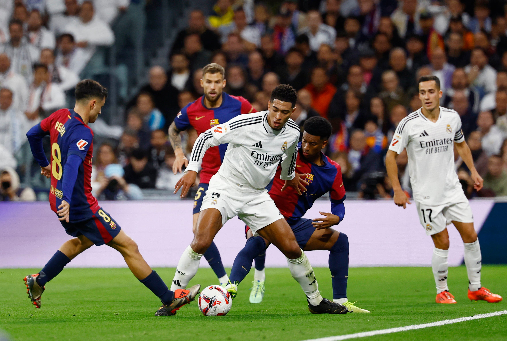

todos los derechos reservados 2026 mateo sanchez, christian antolin, santiago diaz, alonso gutierrez, dari andrade y valentina absacal
SPORT OF SPAIN Home | History | Places | Food | sports | contact Football is by far the most played and popular sport in Spain, firmly established as the "king of sports"with 70% of the population interested in its competitions. It boasts over 1.26 million registered players, representing nearly 29% of all registered athletes in the country.passed down from generation to generation within families.Intense rivalries, such as El Clásico between Real Madrid and FC Barcelona, often reflect deeper political and cultural divisions,Football in Spain is unique because it's a deeply rooted cultural, social, and economic phenomenon, acting more as a unifying passion than just a sport.La Liga, the historical presence of the world's best players, and the inherited family passion. Spanish football is a symbol of technical excellence, passion, and global influence, known for its attractive style of play, legendary clubs, and continuous impact on world football.
and other thing very important is that in Spain exist a shop of soccer shoes her name is FUTBOL EMOTION